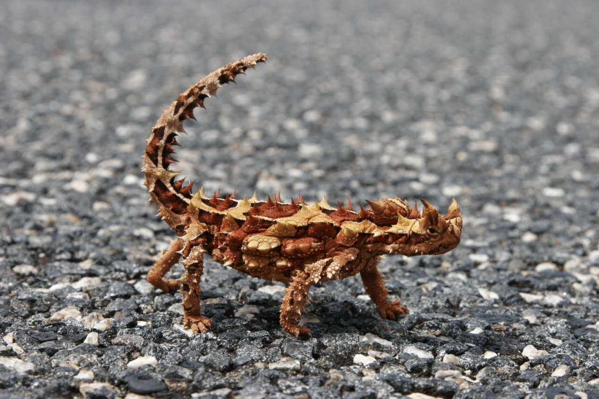

Diabo Espinhoso

O Diabo Espinhoso é uma espécie de lagarto encontrado apenas na Austrália,
mais especificamente no Grande Deserto de Areia, no interior de país. Até hoje ele é a única espécie conhecida do
gênero Moloch da família Agamidae. Ele também é conhecido como Dragão-espinhoso,
Demônio da montanha, Lagarto australiano ou até mesmo Lagarto espihnoso.
O corpo do diabo-espinhoso é de cor marrom arenosa, com algumas áreas mais escuras entre os espinhos.
Como muitas outras espécies, a cor do animal é determinada por seu habitat. Os tons marrons acinzentados
do diabo-espinhoso permitem que ele se camufle para evitar predadores.
Embora o diabo-espinhoso não seja nenhum deus da guerra, os espinhos em seu corpo são, sem dúvida, sua característica mais marcante.
Esses espinhos evoluíram como um mecanismo de defesa contra possíveis predadores.